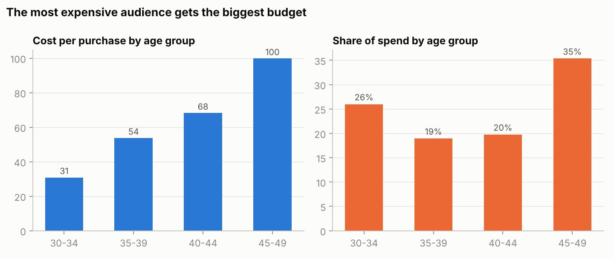

Independent analysis / Facebook audience analysis
Where should the next advertising budget go?
Using the public Sales Conversion Optimization dataset, I compared campaign spend, enquiries and reported conversions across age, gender and interest groups. The question was whether the budget split matched observed acquisition efficiency.

The brief
The dataset contains 1,143 ad records from three campaigns. I built summary tables with SUMIFS formulas and a dashboard to compare spend and reported purchase conversions across audience groups.
What stood out
In the existing analysis, cost per reported purchase was approximately 31 for ages 30–34 and 100 for ages 45–49, in the dataset’s currency units. The older group received approximately 35% of spend, compared with 26% for the younger group. This was a clear reason to investigate the allocation.
What I would test
I would test a gradual reallocation toward audiences with lower historical acquisition costs and monitor whether those costs hold as spend increases. Gender and interest differences would provide further hypotheses for controlled audience tests.
What the data can support
These comparisons are descriptive. Campaign mix and audience overlap may explain part of the difference. The data does not provide dates, revenue or margin, so it cannot establish profitable spend levels or prove that a budget change would produce an uplift.